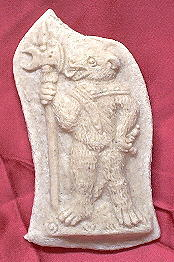

|
|
 THIS SITE'S RECIPES: Oua Trutae Condita Vt Pisa Credantur SEE ALSO: Gode Cookery Table of Contents UPDATES: RECIPES & COOKERY: Recipes from A Newe Boke of Olde Cokery Incredible Foods, Solteties, & Entremets Illusion Foods Glossary of Medieval Cooking Terms ARTICLES ON COOKERY: Regimen Sanitatis Salernitanum An Elizabethan Dinner Conversation Coqz Heaumez - A Helmeted Cock FEASTS & DINNERS: IMAGES: RESOURCES: Gode Cookery Selected Site of the Month Gode Cookery Awards and Site Reviews WEB NAVIGATION: The Medieval & Renaissance Cookery Webring RECIPES MAY BE FOUND IN: Recipes from A Newe Boke of Olde Cokery Incredible Foods, Solteties, & Entremets Illusion Foods Coqz Heaumez - A Helmeted Cock
© 1997-2009 PLEASE VISIT: The Gode
Cookery Bookshop |
"The imitations of dishes
and special presentations assume a deeper,
almost philosophical meaning if we consider the theory of Levi-Strauss,
according to which the preparation of food constitutes one of the major
culture-creating achievements of humanity, the cooking of the raw an
act
of establishing culture. In these dishes man transcends nature either
by
transforming the foodstuffs (e.g. cooked peas turned into a
hare-roast),
or by preparing them in a nobler or more artistic form, as is the case
with the special presentations. The chef thus becomes a creator, like
the
painter who adds symbolism to his depiction of nature, who transcends
nature
by capturing the meaning given to it by God through his creation of
meaning."
- Helmut Birkhan, Some Remarks on Medieval Cooking: The Ambras
Recipe-Collection
of Cod. Vind. 5486.
Illusion foods are those dishes which were designed to fool either eye or palate; however, unlike their companions, Incredible Foods, Solteties, & Entremets, illusion foods were not marvelously theatrical presentations or exotic masterpieces of culinary achievement. Illusion foods, or foods that were in some way made in imitation of other foods, could be both simple or complex but were always meant to be enjoyed primarily for their satisfaction in taste & edibility. Some illusion foods play tricks on the eye, such as To make pescoddes, which turns a pasty into a pea pod. Other illusion foods were made to be substitutes for the real thing; Ricotta Contrafatta & Butiro Contrafato, with their base ingredients of almond milk & fish broth, could be used in fasting times when diary products were prohibited. And many illusion foods existed simply to provide delight or amusement, turning the ordinary into magic. Even an adult could marvel childlike over Eyroun in Lentyn, a candy egg made inside a real egg shell, or Hattes, with its charm of a doll's hat. Illusion Foods filled the niche between everyday food & extravagant creations, and, quite importantly, usually with a touch of humor. In the Middle Ages they provided both needed sustenance & entertainment, which, just like today, is always a very good thing indeed. Visit our companion site: Incredible
Foods, Solteties, and Entremets
Get a pound and a half of blanched, well ground almonds; get half a beaker of good rosewater and strain the almonds - if that rosewater is not enough, use however much you need so that the amount of almonds can be strained; then, so the almond milk will bind well, get a little starch, a little saffron if you want, and fine sugar, and lay this mixture into a mold as if were butter; like that it is good to eat. Scully,
Terence. Cuoco Napoletano. The Neapolitan
Recipe Collection : (New York, Pierpont Morgan Library, MS Buhler, 19)
: A Critical Edition and English Translation. Ann Arbor: The
University
of Michigan Press, 2000.
Take Eyroun, & blow owt that ys with-ynne atte other ende; than waysshe the schulle clene in warme Water; than take gode mylke of Almaundys, & sette it on the fyre; than take a fayre canvas, & pore the mylke ther-on, & lat renne owt the water; then take it owt on the clothe, & gader it to-gedere with a platere; then putte sugre y-now ther-to; than take the halvyndele, & colour it with Safroun, a lytil, & do ther-to pouder Canelle; than take & do of the whyte in the nether ende of the schulle, & in the myddel the yolk, & fylle it vppe with the whyte; but noght to fulle, for goyng ouer; than sette it in the fyre & roste it, & serue f[orth]. Austin, Thomas. Two Fifteenth-Century Cookery-Books. Harleian MS. 279 & Harl. MS. 4016, with extracts from Ashmole MS. 1429, Laud MS. 553, & Douce MS 55. London: for The Early English Text Society by N. Trübner & Co., 1888. Gode Cookery translation:
Take eggs, and blow out that is
within at the other end; then wash the shell clean in warm water; then
take good milk of almonds, and set it on the fire; then take a fair
canvas,
& pour the milk thereon, & let run out the water; then take it
out on the cloth, & gather it together with a platter; then put
sugar
enough thereto; then take half of it, & color it with saffron, a
little,
& do thereto powder cinnamon; then take & do the white in the
nether
end of the shell, & in the middle the yolk, & fill it up with
the
white; but not too full, for going over; then set it in the fire &
roast it, & serve forth.
Wildu ein furhes aus arbais machen, so sewd sy, daz sit nicht musot werden, vnd geprant pfeffer prat, vnd treib si do mit durich, vnd reib ein lezelten dor vnter oder ein prot, vnd nim daz verprunnen prot, vnd stoz ez gar chlain, vnd tu ez auch dar vnder, so wirt ez swarcz vnd nim chlain gesniten zwifel, vnd di swais ab In ainem smalcz oder ol, di tu dar ein, vnd honig, vnd wurez ez vnd mach ein hert prot alz ein hasen kopf, vnd tu ez dar ein, vnd versalcz nicht, etc. If you wish to prepare pepper roast from peas, cook the peas but do not let them get too soft. Mix them with burned pepperbread, strain them through a cloth, grind gingerbread and bread into the mixture, and take the burned pepperbread, grind it as finely as possible, add it to the mixture so as to blacken it. Take finely chopped onions and fry them in lard or oil; add onions to the mixture together with honey and spices. Make a "hard bread" in the shape of a hare's head, and place it next to it and do not add too much salt. Birkhan,
Helmut. "Some Remarks on Medieval Cooking:
The Ambras Recipe-Collection of Cod. Vind. 5486." Food in the
Middle
Ages. A Book of Essays. New York and London: Garland Publishing,
Inc.,
1995.
Wildu machen gefult pleter aus ayern, so nim ayer, vnd klopf daz weis besunder, vnd nim ein wenig smalcz In ein pfannen, daz ez nur den poden necz, vnd gues die ayer dar ein vnd mach gar dunne pleter, vnd mach aus den totern auch pleter, vnd di pleter bestreich pranten opfeln oder weinper oder feigen, vnd welig si dann vber ein ander, vnd sneid si dann alz di rosen wurst, vnd stoz ir doch v oder iiii an ein spislein von holcz, vnd mach ein taig, vnd welig sy dar Inn, vnd pachs dann, vnd zewg dann die spislein heraus, vnd sneid si dann nach der leng auff. If you wish to make stuffed omelettes, beat the egg whites separately from the yolks, and fry them in some lard to a thin layer. Make similar layers from the yolks. Spread fried apples, raisins, or figs on the layers, place them on top of each other, and roll them up; arrange them so that the cross-cut looks like a rose. Stick wooden skewers through four to five of the "flowers," make a batter, and roll them in the batter. Fry them in hot lard, remove them from the skewers, and cut them open length-wise. Birkhan,
Helmut. "Some Remarks on Medieval Cooking:
The Ambras Recipe-Collection of Cod. Vind. 5486." Food in the
Middle
Ages. A Book of Essays. New York and London: Garland Publishing,
Inc.,
1995.
Make a past of paryd floure, knodyn with yolkes of eyroun; & make a stuf of vele & porke, sodyn & groundyn, with yolkes of eyron; mary dysed, & datys mynsyd; corauns; sigure, safron & salt & poudyr; & medyll al togedyr. & make youre past on round foyles of the brede of a saucer, as thyn as may be drawn. Turne hem doble, that the brerdys may come to the medyll of the foyle; then turne hem togedyr that the brerdys on the more side mete al aboute, & the lasse brerde turne upward withoutyn in the maner of a hat. & close well the egges that they hold well. Fyll theron thy stuff. Have a bature of yolkes of eyroun & whete floure in the opyn syde that ys toward. Loke theryn the stuf be closyd, & set hit yn hote grece upryght. When the bature ys fryed, thu may ley hym down & fry hym al overe. Hieatt, Constance B. An Ordinance of Pottage. An Edition of the Fifteenth Century Culinary Recipes in Yale University's MS Beinecke 163. London: Prospect Books Ltd, 1988. Gode Cookery translation:
Make a pastry dough of prepared
flour, kneaded with yolks of eggs; & make a stuffing of veal &
pork, boiled & ground, with yolks of eggs; marrow diced, &
dates
minced; currants; sugar, saffron & salt & spices; & mix all
together. And make your pastry on round foils of the breadth of a
saucer,
as thin as may be drawn. Turn it double, that the edges may come to the
middle of the foil; then turn it together that the edges on the bigger
side meet all about, & the smaller side turn upward without in the
manner of a hat. And close well the edges that they hold well. Fill
there-on
your stuffing. Have a batter of yolks of eggs & wheat flour in the
open side that is toward. Look there-in the stuffing be closed, &
set
it in hot grease upright. When the batter is fried, you may lay it down
& fry it all over.
Wilt du machen behemmische erweiz. so nim mandel kern und stoz die gar cleine. und mengez mit dritteil als vil honiges. und mit guten würtzen wol gemenget. so ers aller beste hat. die koste git man kalt oder warm. How you want to make Bohemian peas. So take almond kernels and pound them very small. And mix it with a third as much honey. And with good spices well mixed. So it has the very best. One hands this out greedily, cold or warm. Atlas, Alia.
Ein Buch von guter spise. <http://cs-people.bu.edu/akatlas/Buch/buch.html>
(March 19, 2003)
Wildu machen ein Ingel von mandel, so min mandelmilch, vnd sewd sy gar woll, vnd seich sy, vnd la sy auff ein tuch truckchen werden, vnd mach sy alzo, daz sy hert werd, vnd stoz dann getailt mandel dar ein, vnd gues mandel milich dar vber, vnd wildu sy gilben, daz macht du auch woll tun, etc. If you wish to make an Almond Hedgehog, take almond milk, bring it to a full boil, strain it dry on a towel. Make it harden; then stick almond slivers into it, and pour almond milk over it. You can also color it yellow if you wish. Birkhan,
Helmut. "Some Remarks on Medieval Cooking:
The Ambras Recipe-Collection of Cod. Vind. 5486." Food in the
Middle
Ages. A Book of Essays. New York and London: Garland Publishing,
Inc.,
1995.
66. Leche Lumbard. Take rawe pork and pulle of the skyn, and pyke out þe synewes, and bray the pork in a morter with ayron rawe. Do þerto sugur, salt, raysouns coraunce, dates mynced, and powdour of peper, powdour gylofre; & do it in a bladder, and lat it seeþ til it be ynowhgh. And whan it is ynowh, kerf it; leshe it in liknesse of a peskodde; and take grete raysouns and grynde hem in a morter. Drawe hem vp wiþ rede wyne. Do þerto mylke of almaundes. Colour it with saundres & safroun, and do þerto powdour of peper & of gilofre and boile it. And whan it is iboiled, take powdour canel and gynger and temper it vp with wyne, and do alle þise thynges togyder, and loke þat it be rennyng; and lat it not seeþ after þat it is cast togyder, & serue it forth. Hieatt, Constance B. and Sharon Butler. Curye on Inglish: English Culinary Manuscripts of the Fourteenth-Century (Including the Forme of Cury). London: For the Early English Text Society by the Oxford University Press, 1985. Gode Cookery translation: Take raw pork and pull off the skin, and pick out the sinews, and pound the pork in a morter with raw eggs. Do there to sugar, salt, currants, minced dates, and powder of pepper, powder cloves; & do it in a bladder, and let it boil til it be done. And when it is done, carve it; slice it in the likeness of a peaspod; and take great raisins and grind them in a morter. Blend it with red wine. Do there to milk of almonds. Color it with sandlewood & saffron, and do there to powder of pepper & of cloves and boil it. And when it is boiled, take cinnamon powder and ginger and mix it up with wine, and do all these things together, and look that it be rennet (coagulated); and let it not boil after that it is cast together, & serve it forth.
Trout eggs prepared so that people think they are peas. When trout eggs have been half-cooked and are taken from the pot and divided into little morsels, to make the juice lumpy pass bread crumbs with it through a strainer or, if there is any pea-juice to be had, take a sufficient amount of that. With this, add spices, saffron, parsley and cut up mint, and again cook the eggs. You would declare you were eating peas. Andrews,
Elizabeth Buermann. De Honest Voluptate.
The First Dated Cookery Book. St. Louis: Volume V from the
Mallinckrodt
Collection of Food Classics, 1967.
Poume d'oranges. Ceo est une viaunde ke est apelé pomme de oranges. Pernez char de porc, ne mye trop gras ne trop megre, e festes couper creu, e festes braer en un morter, e metez dedenz le moel de l'oef cru; e pernez le bro, si festes boiller; e puys pernez le blaunc de l'oef e oyngnez vos meinz; e puys pernez hors la char e festes roundes soelez cume oingnun, taunt come vos volez, e festes boiller en cel bro; e puys pernez les hors e metez chescun parmy une broche ke nul ne tuche autre; e puys metez au feu pur rostir; e pernez deus esqueles, e metez le blaunc en une esquele e le moel, e festes oyndre les poumes kaunt it sunt charnis parmy; e pernez sucre e jetez desus kaunt il sunt tret hors de la broche; e puys dressez. Oranges. This is a dish which is called "oranges." Take pork, neither too fat nor too lean, and cut it up raw; grind it in a mortar and add raw egg yolk; then take broth and bring it to a boil; then take the white of an egg and rub it on your hands; then take out the meat and make round balls, like an onion, as many as you wish, and boil them in the broth; then take them out and arrange on spits so that they are not touching and put them to roast on the fire; and take two dishes and put the white of an egg in one and the yolk (in the other) and coat the "oranges" when they are rolled therein; take sugar and sprinkle it over them when they are removed from the spit, and then serve. Hieatt,
Constance B. and Robin F. Jones. "Two Anglo-Norman
Culinary Collections Edited from British Library Manuscripts Additional
32085 and Royal 12.C.xii." Speculum vol. 61, issue 4 (Oct.
1986):
859-882.
Fake Ricotta. Get a pound of almonds, blanch them - that is, let them steep a night so that their skins will come off more neatly - and grind them up; then get four ounces of sugar, one ounce of rosewater, half a beaker of fish broth - that is, of pike or good tench - distemper everything together and strain it finely; place this mixture into a mold like those carried by peddlers who cry out, "Ricotta! Ricotta!"; when you have put the mixture into the mold, put it in a cool place in the evening for the following morning, then dump it out on a trencher board, not forgetting the garnish of sugar, rosewater and candied aniseed. Scully,
Terence. Cuoco Napoletano. The Neapolitan
Recipe Collection : (New York, Pierpont Morgan Library, MS Buhler, 19)
: A Critical Edition and English Translation. Ann Arbor: The
University
of Michigan Press, 2000.
To make Nowmbyls of Muskyls. Seth muskyls, & then shop þam grete & medil þam with almonde mylk, & make a thyk potage; & colour it with saferon. With kokyls or with pervinches ye may do þe same. Hieatt, Constance B. "The Middle English Culinary Recipes in MS Harley 5401: An Edition and Commentary." Medium Ævum vol. 65, no. 1 (1996): 54-71. Gode Cookery translation: To make umbles of mussels. Boil mussels, & then chop them great & mix them with almond milk, & make a thick pottage; & color it with saffron. With cockles or periwinkles you may do the same. Note: umbles are the edible viscera of animals, usually hogs or deer. This recipe uses shellfish in imitation of the real thing. Take mary bones and pull the mary hole out of them and cut it in two partes then season it with suger / synamon ginger and a little salte / and make your paest as fyne as ye can and as shorte and thyn as ye can / then frye theim in swete suet and cast vpon theim a lytle sinamon and ginger and so serue them at the table. A Propre new booke of Cokery, 1545 Gode Cookery translation: To make peasecods. Take marrow bones and pull the marrow whole out of them and cut it in two parts then season it with sugar / cinnamon ginger and a little salt / and make your paste as fine as you can and as short and thin as you can / then fry them in sweet suet and cast upon them a little cinnamon and ginger and so serve them at the table.
Beate a quarter of a pound of double refined Sugar, cearse it with two or three spoonefulls of the finest, the youlkes of three new laid egs, and the white of one, beate all this together in with two or three spoonefulls of sweete creame, a graine of muske, a thimble full of the powder of a dried Lemond, and a little Annise-seede beaten and cearsed, and a little Rose-water, then baste Muskle-shells with sweete butter, as thinne as you can lay it on with a feather, fill your shells with the batter and lay them on a gridiron or a lattise of wickers into the ouen, and bake them, and take them out of the shells, and ise them with Rose-water & Sugar. It is a delicate bread, some call it the Italian Mushle, if you keepe them any long time, then alwaies in wet weather put them in your ouen. A Daily Exercise for Ladies and Gentlewomen, 1617 Gode Cookery translation:
Beat a quarter of a pound of double
refined sugar, sieve it with two or three spoonfuls of the finest, the
yolks of three newly laid eggs, and the white of one, beat all this
together
in with two or three spoonfuls of sweet cream, a grain of musk, a
thimble
full of the powder of a dried lemon, and a little anise seed beaten
&
sieved, and a little rosewater, then baste mussel shells with sweet
butter,
as thin as you can lay it on with a feather, fill your shells with the
batter and lay them on a grid iron or a lattice of wicker into the
oven,
and bake them, and take them out of the shells, and ice them with
rosewater
and sugar. It is a delicate bread, some call it the Italian Mussel, if
you keep them any long time, then always in wet weather put them in
your
oven.
Looking for a specific recipe, food, or ingredient at Gode
Cookery?
THE GODE BOKE RING
Gourmet medieval & Renaissance cookies from Gode
Cookery, perfect
for feasts, weddings, receptions, & more. In dozens of delightful
&
authentic designs.  http://www.godecookery.com/cookies/cookies.html
|


 Illusion
Foods
Illusion
Foods
 Gode Cookery
Gode Cookery